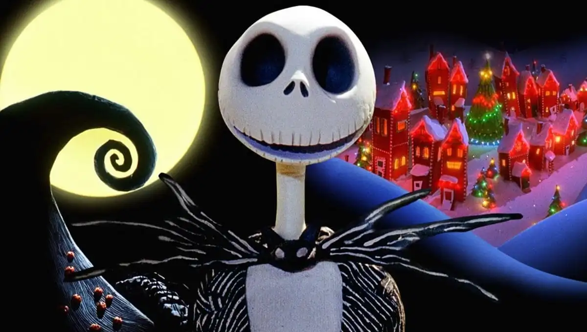
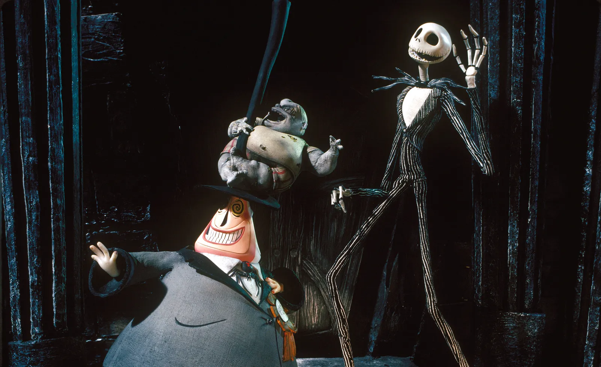
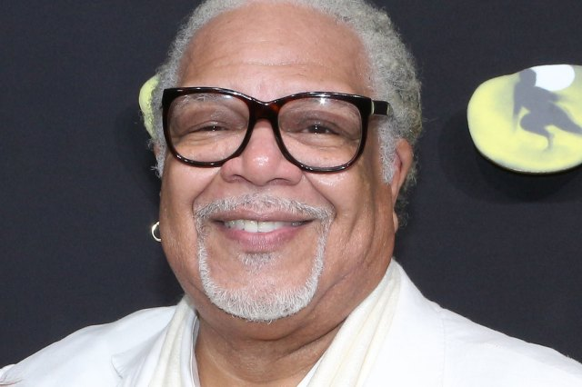
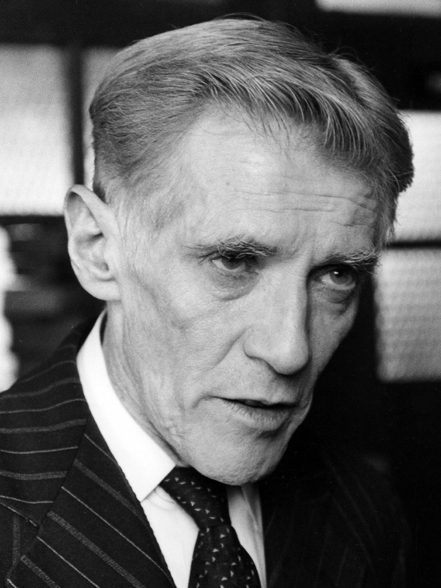
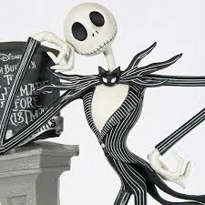
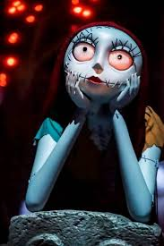
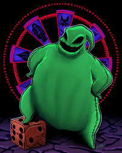
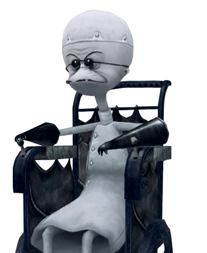

Sally es un ejemplo de cómo uno debe escuchar a su corazón y liberarse de las expectativas
que otros tienen sobre uno mismo, incluso cuando el destino está "escrito".

Tim Burthon
Todos somos especiales a nuestra manera, y debemos aceptarnos
y sentirnos orgullosos de nuestras cualidades, en lugar de intentar ser alguien que no somos

Tim Burthon
Al tomar riesgos y salir de su zona de confort, Jack expande sus
horizontes y aprende mucho, lo cual le permite regresar a su rol con una nueva perspectiva.
Henry Selick ha dicho que la razón por la que el traje de Jacktiene finas rayas blancas es para que el personaje destaque en el entorno ya oscuro.
ʚ🍒ɞ2:
Las canciones se escribieron antes del guion. Tim Burton básicamente le decía a Danny Elfman lo que iba a pasar en las escenas en las que se incluían las canciones,
además de mostrarle algunos bocetos y Elfman escribía la letra apropiada.
ʚ🍒ɞ3:
El plan original para el final era que Oogie Boogie hubiera sido el Dr. Finkelstein todo el tiempo. Aparentemente, a Tim Burton no le gustó tanto esta idea que le
dio una patada a un agujero en la pared.
ʚ🍒ɞ4:
Vincent Price fue originalmente elegido como Santa Claus e incluso grabó el diálogo. Sin embargo, debido a la edad y la mala salud de Price, las pistas se consideraron
inutilizables, por lo que el papel fue refundido. Price moriría 4 días antes del estreno de la película y, hasta el día de hoy, la actuación de Price como Santa se ha perdido
ʚ🍒ɞ5:
La película tardó 3 años en hacerse con un equipo de 100 personas. Y se necesitaron 12 movimientos de stop motion para crear un segundo de película.
ʚ🍒ɞ6:
En 2001, Disney estaba considerando la idea de hacer una secuela. Su plan era usar CGI en lugar de stop motion. Tim Burton los convenció de abandonar la idea.
ʚ🍒ɞ7:
Aparentemente, la toma más difícil de la película fue la toma aparentemente simple donde Jack alcanza el pomo de la puerta de la ciudad navideña.
ʚ🍒ɞ8:
La película fue adaptada libremente de un poema que Tim Burton escribió. Burton se inspiró para escribir el poema después de ver una exhibición de Halloween que se quitaba en
una tienda y se reemplazaba por una exhibición navideña. El poema solo estuvo disponible esporádicamente hasta el 20 aniversario de la película, donde se publicó en forma de libro.
ʚ🍒ɞ9:
El extraño mundo de Jack fue la primera película de stop motion en ser clasificada PG.
ʚ🍒ɞ10:
Jack tiene la voz de dos personas diferentes. Chris Sarandon para su voz hablada y Danny Elfman para su voz cantada. El plan original era que Elfman hiciera ambas cosas, pero
descubrió que su voz era demasiado rígida y tiesa. Sarandon fue elegido porque su voz hablada era muy similar a la voz cantada de Elfman.
ʚ🍒ɞ11:
Que el alcalde tenga una cara en la parte posterior de su cabeza es un juego de palabras con el término "político de dos caras".
ʚ🍒ɞ12:
La guionista de la película, Caroline Thompson, ha admitido que, aunque está muy orgullosa de la película, lamenta su manejo de Oogie Boogie, sintiendo que la forma en que fue
escrito era emblemática de varios estereotipos negros. El hecho de que tenga la voz del negro Ken Page no ayudó. Dijo que había pedido a Burton y Selick que lo cambiaran, pero fue anulada.
ʚ🍒ɞ13:
Tim Burton y Danny Elfman tuvieron diferencias creativas durante el rodaje. Fue por esta razón que Elfman optó por no componer la banda sonora de Ed Wood de Burton.
ʚ🍒ɞ14:
Sally tuvo 10 caras diferentes a lo largo de la producción, cada una con una serie de 11 expresiones.
ʚ🍒ɞ15:
La película fue concebida originalmente como un especial de televisión en lugar de una película.
ʚ🍒ɞ16:
Ken Page basó la voz de Oogie Boogie en una mezcla del León Cobarde de El Mago de Oz y Pazuzu de El Exorcista.
ʚ🍒ɞ17:
El diseño del personaje de Behemoth está basado en Tor Johnson, quien es más famoso por sus colaboraciones con Ed Wood.
ʚ🍒ɞ18:
Danny Elfman basó la canción "What's This" en "I Am the Very Model of a Modern Major General" de la ópera Los piratas de Penzance.
ʚ🍒ɞ19:
Durante las escenas que ocurren en Nochebuena, se muestra que la luna está llena. Sin embargo, antes, la luna estaba llena en Halloween. Si la luna estaba llena en Halloween, entonces
estaría en fase gibosa creciente en Nochebuena.
ʚ🍒ɞ20:
El juguete del vampiro volador fue diseñado para que se pareciera un poco a Mickey Mouse.
⋆｡ﾟ☁︎｡⋆｡ ﾟ☾ ﾟ｡⋆ELENCO PRINCIPAL⋆｡ﾟ☁︎｡⋆｡ ﾟ☾ ﾟ｡⋆
-Danny Elfman
-Catherine O'Hara

-Ken Page

-William Hickey

-Jack Skellington

-Sally

-Oogie Boogie

-Doctor Finklenstein
Tim Burton
⋆｡ﾟ☁︎｡⋆｡ ﾟ☾ ﾟ｡⋆ALGUNOS DE SUS OTROS EXITOS⋆｡ﾟ☁︎｡⋆｡ ﾟ☾ ﾟ｡⋆